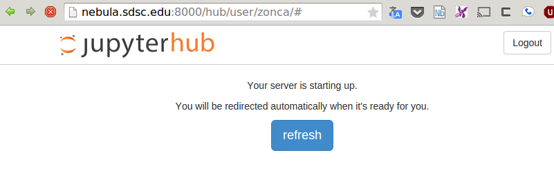
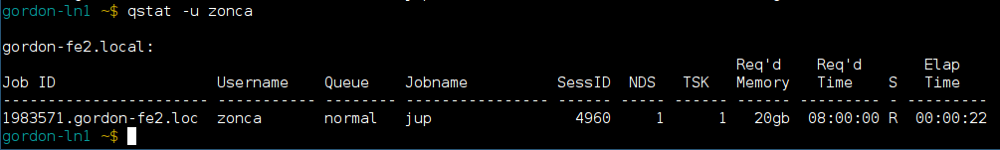
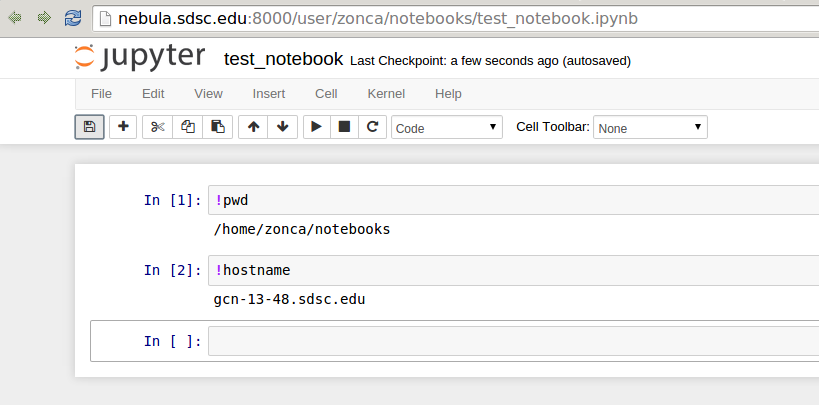
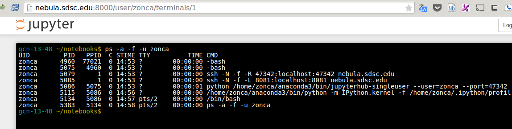
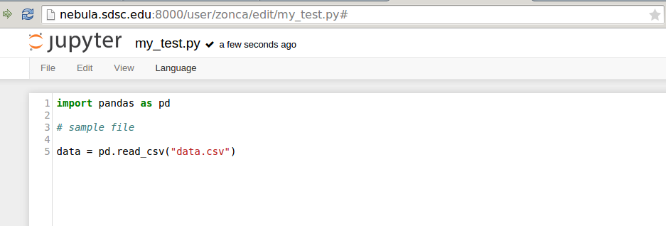
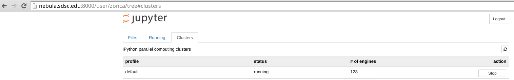

Summary: I developed a plugin for Jupyterhub: RemoteSpawner, it has a proof-of-concept interface with the Supercomputer Gordon at UC San Diego to spawn IPython Notebook instances as jobs throught the queue and tunnel the interface back to the Jupyterhub instance.
The IPython (recently renamed Jupyter) Notebook is a powerful tool for analyzing and visualizing data in Python and other programming languages. A key feature is that a single document contains code, figures, text and equations. Everything is saved in a single .ipynb file that can be shared, executed and modified. See an example Notebook on integration of partial differential equations.
The Jupyter Notebook is a Python application with a web frontend, i.e. the interface runs in the user browser. This setup makes it suitable for any kind of remote computing, in particular running the Jupyter Notebook on a computing node of a Supercomputer, and exporting the interface HTTP port to a local browser. Setting up tunneling via SSH is tedious, in particular if the user does not have a public IP address.
Jupyterhub, developed by the Jupyter team, comes to the rescue by providing a web application that manages and proxies multiple instances of the Jupyter Notebook for any number of users. Jupyterhub natively only spawns local processes, but supports plugins to extend its functionality.
I have been developing a proof-of-concept plugin (RemoteSpawner) designed to work on a web server and once a user is authenticated, connect to the login node of a Supercomputer and submit a Jupyter Notebook job. As soon as the job starts execution, it sets up SSH tunneling with the Jupyterhub host so that Jupyterhub can provide the Notebook interface to the user. This setup allows users to simply access a Supercomputer via browser, accessing all their Python environment and data.
I am looking for interested parties either as users or as collaborators to help further development. See more information about the project below.
Test it yourself
In order to have a feeling on how Jupyterhub works, you can test in your browser at:
This service by Rackspace creates temporary Jupyter Notebooks on the fly. If you click on Welcome.ipynb, you can see an example Notebook.
The purpose of my project is to have a web interface to access Jupyter Notebooks that are running on computing nodes of a Supercomputer. So that users can access the environment and data on a Supercomputer from their browser and run data-intensive processing.
Tour of Jupyterhub on the Gordon Supercomputer
I’ll show some screenshots to display how a test Jupyterhub installation on my machine is integrated with Gordon thanks to the plugin.
Jupyterhub is accessed publicly via browser and the user can login. Jupyterhub supports authentication for PAM/LDAP so it could be integrated with XSEDE credential, at the moment I am testing with local authentication.

Once the user is authenticated, Jupyterhub connects via SSH to a login node on Gordon and submits a batch serial job using qsub. The web interface waits for the job to start running. A dedicated queue with a quick turnaround would be useful for this kind of jobs.
 
When the job starts running, it first sets up SSH tunneling between the Jupyterhub host and the computing node, then starts the Jupyter Notebook. As soon as the web interface detects that the job is running, proxies the tunneled HTTP port for the user. From this point the Jupyter Notebook works exactly like it would on a local machine.
See an example Notebook printing the hostname of the computing node:

Other two useful features of the Jupyter Notebook are a terminal:

and an editor that run in the browser:

Launch Jupyterhub parallel to access hundreds of computing engines
The Notebook also supports using Torque to run Python computing engines and send them computationally intensive serial functions for load-balanced execution.
In the Notebook interface, in the Clusters tab, is it possible to choose the number of engines and click start to submit a job to the queue system:

This will pack 16 jobs per node (Gordon has 16-cores CPUs) and make them available from the notebook, see an example usage where I process 1000 files with 128 engines running on a different job on Gordon: